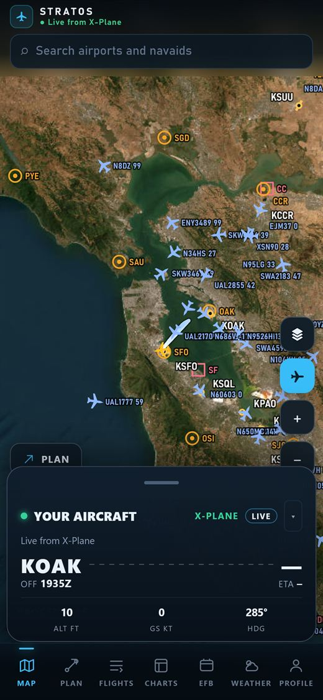

Desktop
Download Stratos
The full flight deck, EFB and logbook, with the simulator bridge built in.
- Windows
- macOS
- Linux
- ChromeOS
Also for macOS (Apple silicon), macOS (Intel) and Linux, or ChromeOS.
Fly as you always do. Stratos follows you on a live map, then saves every flight to your logbook with replay and landing analysis. No subscription, no account needed.
Also on macOS, Linux and ChromeOS · Phone Mode installs from your phone's browser


Run the installer. The small simulator bridge starts with the app, so there's nothing else to set up for MSFS.
Stratos picks up X-Plane 12 or MSFS on its own. Your aircraft appears on the map, live, with traffic around you.
The flight is in your logbook: route, times, a full replay and how firm your landing was.
The tracker, the logbook and a full flight bag, in one free app.
Your aircraft on satellite or chart maps, with the instruments you check most along the top.
Briefing, charts, weather, performance, weight and balance, fuel and checklists, laid out like a tablet in the cockpit.

Put your phone next to the yoke. It shows the live flight, the plan, charts and weather, built for touch rather than a squeezed desktop.
Hours, distance, airports, aircraft, routes, records and milestones, added up from the flights you actually flew.
Scrub through any flight with the aircraft moving on the map and altitude and speed profiles underneath.
Touchdown rate, ground speed, runway and distance past the threshold, judged against your aircraft type.
Drag waypoints on the map, import from SimBrief, or load PLN, FMS and GPX files. Export back to your sim.
Real METARs and TAFs, decoded, with crosswind and gust components for the runway you'll use.
Not sure where to fly? Pick a mood and a length, and Stratos suggests three real routes to try.
Both use the same logbook and flight plan.
The full flight deck, EFB and logbook, with the simulator bridge built in.
Also for macOS (Apple silicon), macOS (Intel) and Linux, or ChromeOS.
A touchscreen version made for the phone beside your yoke, not the desktop shrunk down.
Add it to your home screen and it opens like an app.
Stratos-Setup.exe.Also for macOS (Apple silicon), macOS (Intel) and Linux.
Intel or AMD Chromebooks can also run the Linux build.
To track your own flights from the sim, use the desktop app.
Yes. Every feature is included, with no subscription, no paid tier and no trial.
Microsoft Flight Simulator 2020 and 2024, and X-Plane 12. Stratos detects which one is running and shows it in the top bar.
In X-Plane, open Settings → Data Output and send rows 3, 17 and 20 over UDP to port 49003 on the PC running Stratos. That's the only setup step.
Start a flight with Stratos open. The desktop app connects to MSFS on its own.
No. Your logbook is stored on your own PC. An account is only useful if you want to follow your flight from a phone or Chromebook on a different network.
Not unless you pair a phone over the internet. Then the PC sends live snapshots out to a relay, and your phone reads them with its own token. Nothing can send commands back to your PC, and pairing can be revoked in Pilot → Settings.
No. Stratos is for flight simulation only and must never be used for real-world navigation.
Download Stratos, start your sim and fly. Your logbook starts with the very next takeoff.